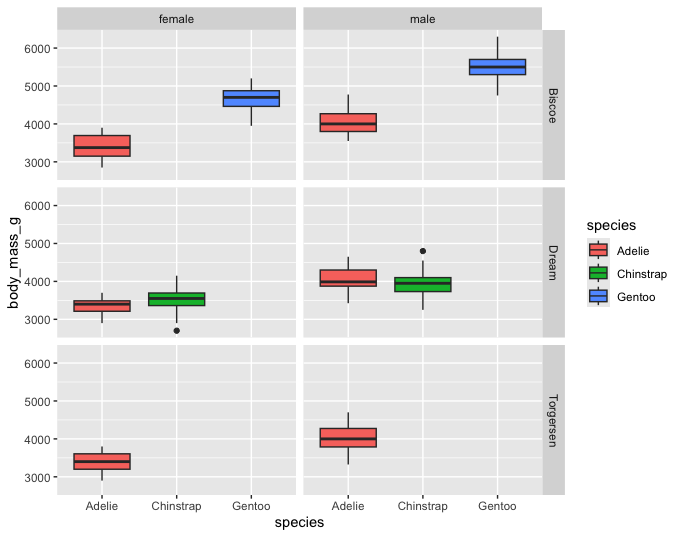
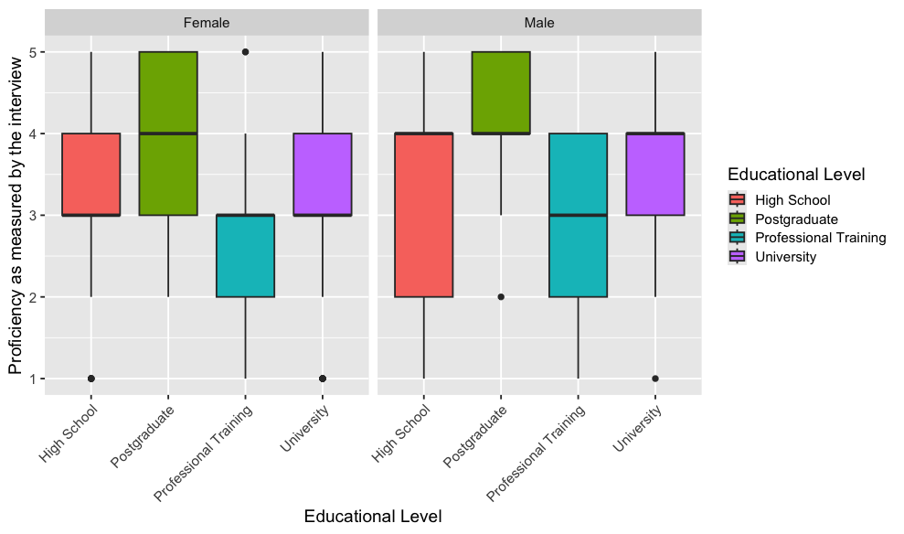
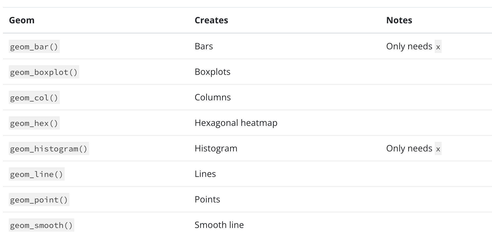

VISUALIZATIONS CONTINUED 🎨
1. Setup
Remember that we have to install packages only once, but we always have to call them into our workspace using library().
2. Box plots
We can use box plots to show the distribution of a numerical variable broken down by a categorical variable (e.g., body mass by species).
With box plots, we need to tell R what variable goes on the x and y axes. The y-axis is for the numerical variable while the x-axis is for the categorical grouping variable.
Let’s examine body_mass_g across different species using geom_boxplot():
Let’s also give each species a different color by mapping the fill argument to the variable species
Your turn!
Add onto the code below to recreate the plot below. Hint: fill and facet_grid.

3. Histograms (For you to look at later)
We can use histograms to examine the distribution of values for a numerical variable. With histograms, we only need the x variable. y is created automatically and shows the counts.
Let’s create a histogram for body_mass_g using geom_histogram():
We can color the bins to be able to see them more clearly:
color-> Color the outlines of binsfill-> Color the inside of the bins
We can also change the number of bins with bins or the width of the bins with binwidth:
Your turn!
Update the code below so that we can see how body_mass_g values are distributed across the levels of the sex variable.
You can either map the variable sex to fill OR use facet_wrap().
4. Bar plots (For you to look at later)
Similar to histograms, we only need to provide x, which will be the categorical variable of interest. y will be automatically calculated and indicate how many observations fall into each category.
Let’s count how many penguins we have in each species:
Your turn!
How can we color the species differently?
Stacked bar plots
We can also use bar plots to show how one categorical variable is distributed within another categorical variable. To do this, we map one categorical variable to x and another to fill.
Side-by-side bar plots
If stacked bar plots are hard to compare, we can place the bars next to each other using position = "dodge".
Standardized bar plots
Sometimes we want to compare proportions instead of counts. We can do so with position = "fill". Now, each bar will have the same height, and the breakdown will show the proportion of each subgroup.
Your turn!
Create a stacked bar plot with species on the x-axis. Each bar should represent the total count of penguins for that species, with different fill colors indicating the island they come from.
5. Further customizing your plots
Using ggplot2, you can customize pretty much any aspect of your plot. Here are two popular tools:
themes control the overall appearance of the plot such as the background, grid lines, and text size
scales control how colors are assigned to variables such as fill colors and outline colors
Themes
Let’s start with a basic box plot:
We can now apply a theme to it.
Scales
Because species is mapped to fill, we can use the scale_fill_manual() function to control the colors:
Instead of manually selecting colors, we can also use a built-in palette with scale_fill_brewer().
Click here to see all palettes.
If our variable of interest was mapped to the color aesthetic, then we would use scale_color_manual and scale_color_brewer.
6. Application! 🏁
Download the dataset
Task
Reproduce the following box plot:

7. Want to learn more about different geoms?
You can find more information about them at https://ggplot2.tidyverse.org/index.html Go to Reference and then choose a geom to see that geom’s documentation.

Caution
BEFORE YOU CLOSE THIS PAGE, SAVE YOUR PROGRESS:
Right-click anywhere on the page
Select Print
Choose Save as PDF
8. Credits
This page contains materials from Posit Academy (2025).